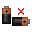

If you have an idea or extension answer, think I made a mistake, or just have a question about something, feel free to get in touch!
A collection of original problems I've created. New ones now and then. Click one to try it.
The Unknown Hourglass
Splitting the Jug

N Batteries, Two Settings
More puzzles coming
If you have an idea or extension answer, think I made a mistake, or just have a question about something, feel free to get in touch!
You have two hourglasses. One runs for exactly 5 minutes. The other runs for some unknown whole number of minutes, call it X, with no markings to tell you how long.
You have no clock, no timer, and no other way to measure time. You can see the exact moment an hourglass runs out and flip it, but you cannot judge how much sand is left in one while it is running. A half-empty glass looks like any other.
Using only the two hourglasses, how can you find X exactly?
Start both together and never let either sit empty. Keep it going long enough and a critical moment arrives, one that tells you something you can turn into an equation.
Start both together and flip each one the instant it runs out, keeping a tally of how many times each is flipped. Stop when both run out at the same moment.
By then both have run for the same total time, one in 5-minute pieces, the other in X-minute pieces. If the 5-minute glass finished a times and the mystery glass b times, then 5a = bX, so:
X = 5a ÷ b
For example, say the tallies come out as a = 9 and b = 5. Then:
5 × a = 5 × 9 = 45 minutes elapsed
X = 45 ÷ b = 45 ÷ 5 = 9
So the mystery hourglass runs for 9 minutes.
Now drop the assumption that X is a whole number. Suppose X can be any positive value at all.
Can you still find X exactly? If not, what is the weakest condition X must satisfy for your method to pin it down?
If you have an idea or extension answer, think I made a mistake, or just have a question about something, feel free to get in touch!
You have as many identical jugs as you like, and unlimited water. The jugs have no markings, so you cannot measure anything by eye.
You can do three things. You can fill a jug to the brim. You can empty a jug completely. And you can connect any group of your jugs so the water flows between them and settles at the same level in each. Jugs can be emptied and reused as many times as you like.
You want a jug holding exactly one hundredth of a jug of water. What is the smallest number of jugs you need?
You do not have to divide by 100 in one go. Break it into its prime factors and divide by each one in turn, emptying and reusing your jugs between steps.
Five
To divide an amount by x, put it in one jug, empty x minus 1 others, then connect all x. The water settles evenly, so each holds an x-th of what you started with. Dividing by x needs exactly x jugs.
Now write 100 as its prime factors:
100 = 2 × 2 × 5 × 5
So you never divide by more than 5 at once. Fill a jug, halve it, halve it again, then divide by 5 twice, emptying and reusing jugs between steps. The largest single step needs five jugs.
Forget 100 for a moment. For any n, the same idea applies: write n as its prime factors, and the number of jugs you need is the largest one.
If you have an idea or extension answer, think I made a mistake, or just have a question about something, feel free to get in touch!
You have n batteries, where n is at least 3. Each one is either good or bad, and you have no way to tell just by looking. You have a controller that takes exactly two batteries at a time, and it has two settings.
In AND mode, the controller lights up only if both batteries are good.
In OR mode, the controller lights up if at least one of the two batteries is good.
You can choose which two batteries to test and which setting to use each time, and you can decide your next test based on what happened before.
In terms of n, what is the fewest tests you need, in the worst case, to work out the exact status of every single battery?
Think about what happens the moment you know, for certain, that one particular battery is good or bad. What does that battery let you do to every other battery?
n + 2
A single battery of known status turns every other battery into a one-test problem: AND(1, i) reveals i if battery 1 is known good, OR(1, i) reveals i if battery 1 is known bad. So the real cost is pinning down one known battery, and that takes at most 5 tests among the first three.
Test AND(1, 2). Light up, both good, 1 test. Test OR(1, 2) next. Fails too, both bad, 2 tests. If AND fails but OR lights up, exactly one of them is good, but not which, so bring in battery 3. AND(1, 3) resolves it in 3 or 4 tests, and if that too is ambiguous, one final test, AND(2, 3), settles it in 5.
Every battery after the third costs one more test using that known battery as reference: 5 + (n − 3) = n + 2.
Below n = 3 there is no third battery to break the tie, so the ambiguous case can never be resolved.
If you have an idea or extension answer, think I made a mistake, or just have a question about something, feel free to get in touch!